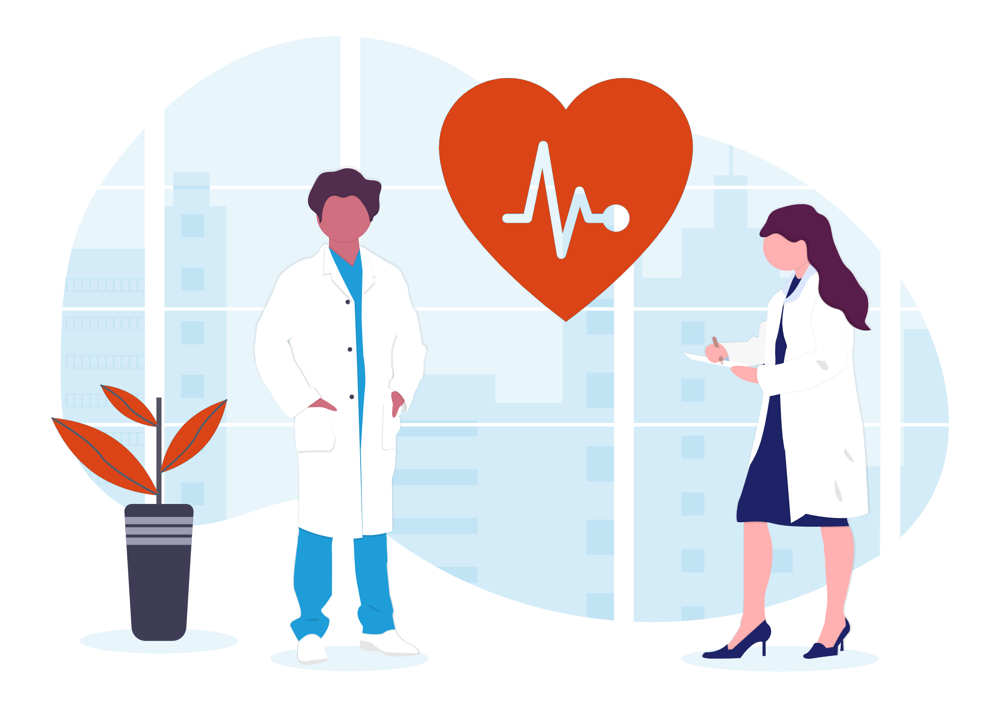

Sobre o Projeto
Nosso objetivo é auxiliar na comunicação entre as Unidades Básicas de Saúde (UBS) e a população de Parnaíba-PI, gerenciar dados gerados nos atendimentos do SUS e otimizar a análise da situação de saúde local.
Como Atuamos
-

Educação em Saúde
Ações e materiais digitais educativos para a população.
Benefícios para a Comunidade/Saúde Pública
Fortalecimento da Vigilância em Saúde
Monitoramento contínuo de dados e indicadores para melhor tomada de decisões em saúde pública.
Aprimoramento da Prevenção e Controle
Ações mais eficientes para prevenção de doenças e controle de surtos nas comunidades atendidas.
Democratização do Conhecimento
Materiais digitais e educativos acessíveis à população para promover o autocuidado e a saúde preventiva.
Colaboração Multidisciplinar
Integração entre os cursos de Enfermagem, Odontologia e Sistemas de Computação, unindo saberes para soluções mais eficazes.
Contatos
-
Rua da Saúde, 245 - Centro | Parnaíba - PI, CEP 64200-000
-
contato@petsaude.org.br
-
(86) 99845-2301
-
Segunda a Sexta: 8h às 17h
-
Sábado: 8h às 12h
-
www.petsaude.org.br